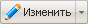

В этом разделе
Перейти к управлению свойствами папки можно, выбрав пункт Свойства папки в меню Менеджера файлов либо нажав Меню команд кнопки  на Административной панели.
Форма служит для управления доступом к соответствующему разделу сайта, а также значениями свойств страниц данного раздела.
Контекстная панель
| Кнопка | Описание |
|---|
| Каталог | Переход в папку, открытую в данный момент в Менеджере файлов. |
Форма содержит две закладки: Свойства каталога и Доступ.
Закладка Свойства каталога
| Поле | Описание |
|---|
| Заголовок | Заголовок папки, отображаемый в цепочки навигации в качестве ссылки на соответствующий раздел. |
| Свойства папки |
|---|
| Поле | Описание |
|---|
| Код | Название свойства, указанное в настройках модуля Управление структурой. |
| Значение | Произвольное значение свойства. |
Пустое поле формы служит для создания свойства, значение которого будет использоваться только для страниц данного раздела. В этом случае в поле Код указывается код (мнемоническое имя) свойства. Код свойства задается символами латинского алфавита. Кнопка Ещё добавляет строку для создания нового свойства страниц текущего раздела. |
| Закладка Права доступа |
|---|
| [Группа пользователей] | Право доступа группы пользователей к данному разделу. Возможны следующие уровни доступа.
- Запрещён - доступ запрещён в любой форме, в т.ч. чтение и просмотр свойств.
- Чтение - пользователю разрешено просматривать содержимое папки.
- Документооборот - пользователю разрешено редактирование документов в папке через систему документооборота.
- Запись - пользователю разрешено самостоятельно изменять файлы папки.
- Полный доступ - пользователю разрешено самостоятельно изменять и удалять файлы папки, а также управлять их свойствами.
- Наследовать - уровень прав доступа пользователей к данной папке наследуется из настроек прав доступа вышележащего каталога.
Настройка доступа в поле Все группы, для которых уровень доступа Наследовать позволяет изменить уровень доступа к папке для всех групп с правом доступа Наследовать. |
Кнопки управления
| Кнопка | Описание |
|---|
| Сохранить | Сохранение свойств папки. Возврат в папку, открытую в менеджере файла. |
| Применить | Сохранение внесённых изменений. Продолжение редактирования свойств папки. |
| Отменить | Отмена внесённых изменений. Возврат в папку, открытую в менеджере файла. |